Lageplan · Gruppen · Kameras

K1 Übersicht SO · K2 Augenhöhe vom Hügel → Mühle · K3 Seite Süd, Silhouette. K4 = Nahaufnahme Fuß an G1.
Frei bleiben: Hügel und Weg (Freifläche), Blick über den Teich auf die Mühle.
Frei bleiben: Hügel und Weg (Freifläche), Blick über den Teich auf die Mühle.
Geschichte
Der Müller mahlt am Mühlteich; der Weg kommt vom Rand über den Hügel herunter zur Mühle. Hinter der Mühle steht der alte Wald aus Kugelbäumen, am Teich hängen Weiden ins Wasser, am Nordhang stehen Kiefern im Wind. Gefühl: ruhiges Waldtal. Man kommt über den Hügel und sieht unten die Mühle.
Farbkonzept 60 / 30 / 10
60 % Violetter Tisch · Boden, Hügel #a582d9
30 % Waldgrün · Kugelkronen #1f7a3e / #2f8a45
10 % Orange · Mühlrad, Dach (Joyride-Tafeltürme); Lime-Blüten #cdc666
Hell-Dunkel: Dunkle Waldmasse direkt hinter der Mühle, davor das helle Teichufer: Das warme Mühlendach hebt sich ab.
Gruppen-Rezepte (Rule of Three, Ort-Begründung)
| G1 | Mühlwald Landmarke Anker: Kugelbaum ×1,3 Stützen: Laubbaum 0,8 · Busch · Beerenbusch Akzent: Baumstumpf |
| G2 | Weiden am Mühlteich Wasser Anker: Weide ×1,2 Stützen: Busch ×2 Akzent: Blumen |
| G3 | Kiefern am Nordhang Hang Anker: Kiefer ×1,3 Stützen: Kiefer breit ×2 (0,8) Akzent: Moosstein |
| G4 | Waldrand Süd Vordergrund K1 Anker: Laubbaum ×1,2 Stützen: Busch · Beerenbusch Akzent: Moosstein |
Vorab zu entscheiden: Mühle ist 2,37 H hoch. Nach der Landmarken-Regel dürfen Bäume höchstens 2,25 H, vor ihr 1,4 H sein: Anker-Band 2,5–4 H geht nicht. Entscheidung: Mühle zuerst nach K2 vergrößern (Tür-Regel) oder Bäume klein lassen?
Arten · Bild aus lineup.html · Zielhöhe in H
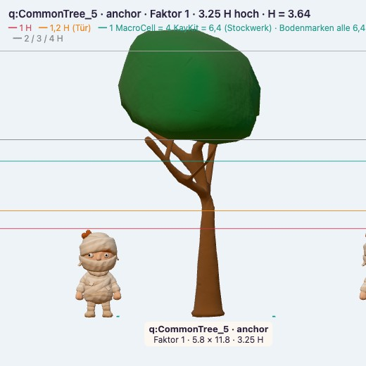
Kugelbaum3,25 H · Anker Wald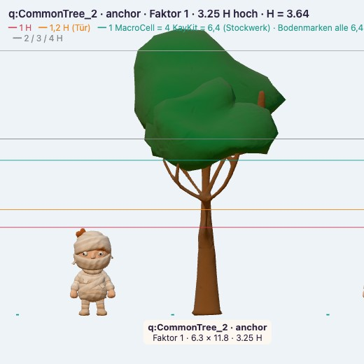
Laubbaum3,25 H · Stütze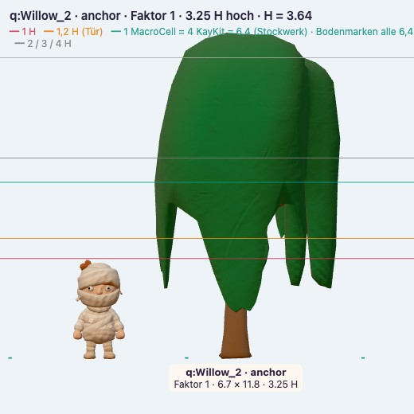
Weide3,25 H · Anker Teich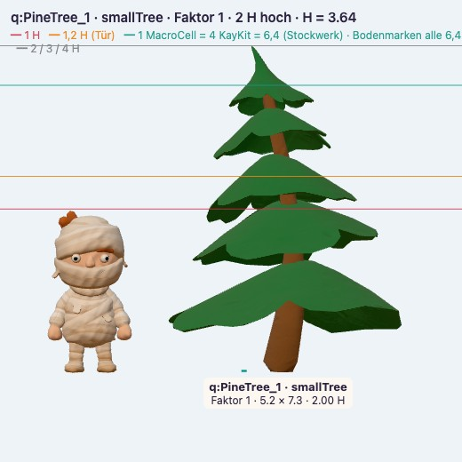
Kiefer2 H · Anker Hang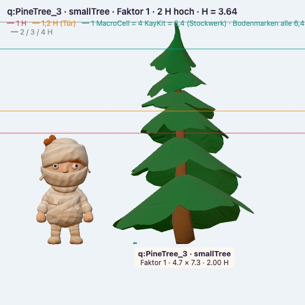
Kiefer breit2 H · Stütze Hang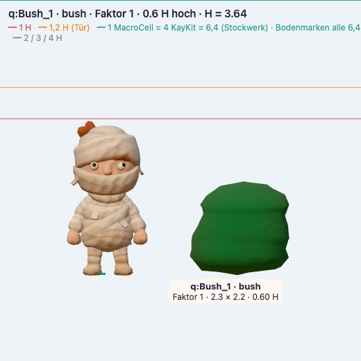
Busch0,6 H · Stütze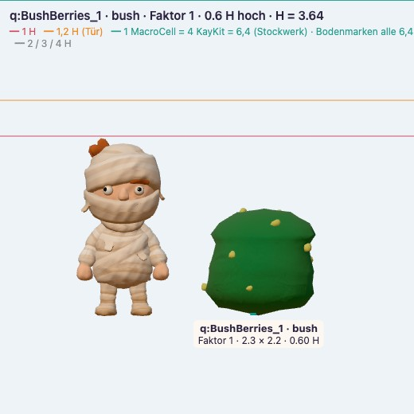
Beerenbusch0,6 H · Stütze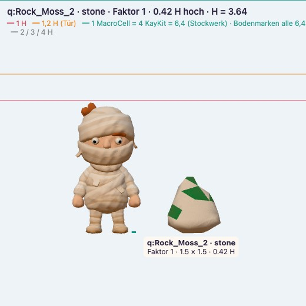
Moosstein0,43 H · Akzent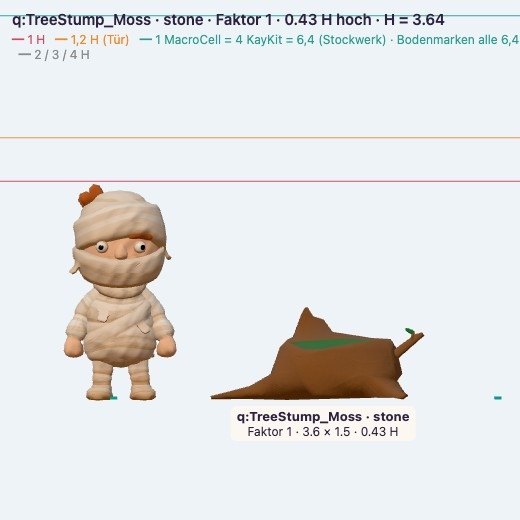
Baumstumpf0,43 H · Akzent Mühle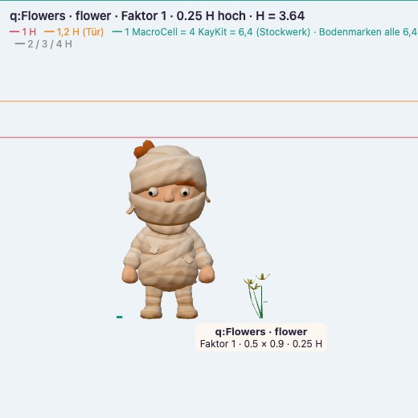
Blumen0,25 H · Akzent Teich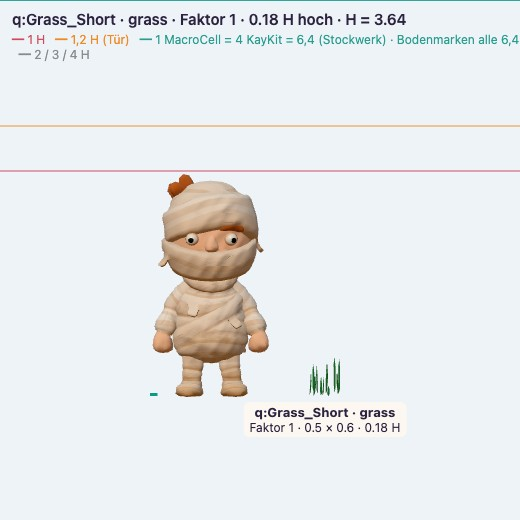
Gras0,18 H · Fuß-ÜberlappungReferenz
 Claybound: runde Knetkronen
Claybound: runde Knetkronen Wald am Wasser, Kiefern
Wald am Wasser, Kiefern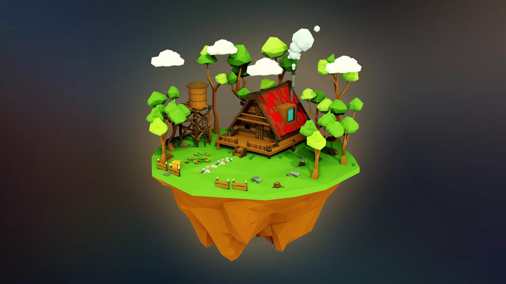
Haus von Bäumen gerahmtKit-Look: facettiert → rund geknetet (gleiche Dreiecke)
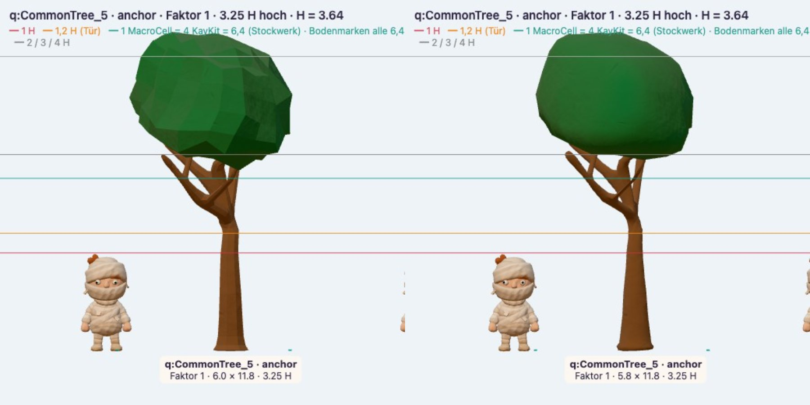